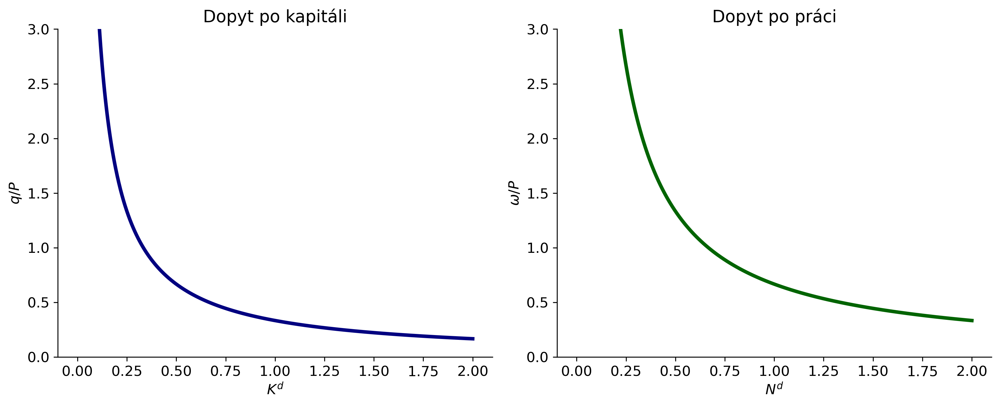
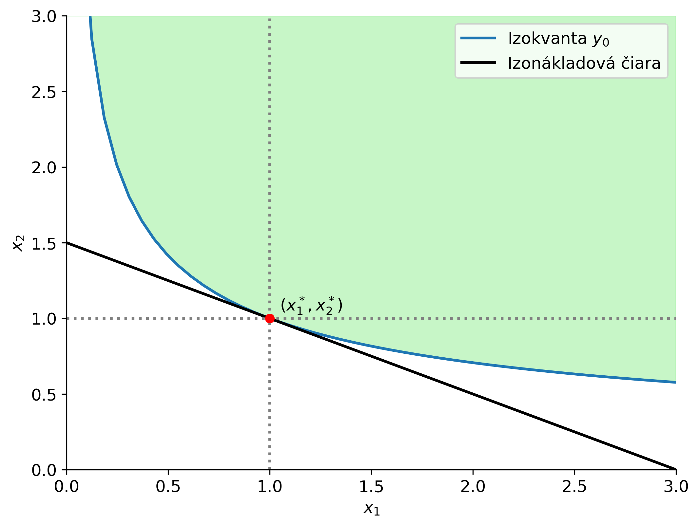

3. Správanie firmy#
V analýze správania firmy potrebujeme poznať zisk firmy.
- Zisk firmy
Rozdiel medzi príjmami a ekonomickými nákladmi firmy.
- Príjmy firmy
tržby z predaja produkcie.
- Náklady firmy
ekonomické náklady, respektíve príležitostné náklady.
Náklady pozostávajú z
kapitálu,
práce,
materiálu,
pôdy.
Nech firma realizuje \(n\) aktivít.
kde \(a_i\) predstavuje rozsah \(i\)-tej aktivity firmy.
Zisk firmy je v tvare:
kde \(\Pi(\mathbf{a})\) je zisková funkcia, \(R(\mathbf{a})\) príjmová funkcia a \(C(\mathbf{a})\) nákladová funkcia.
Firma sa usiluje výberom aktivít \(\mathbf{a}\) maximalizovať ziskovú funkciu (3.1). Rieši úlohu na voľný extrém (Úloha na voľný extrém), ktorej podmienky prvého rádu sú v tvare:
Označme
ako hraničný príjem z aktivity \(i\) a
ako hraničný náklad aktivity \(i\).
Iný zápis podmienok prvého rádu je:
kde \(MR_i(\mathbf{a})\) sú hraničné príjmy a \(MC_i(\mathbf{a})\) hraničné náklady.
Firma zvyšuje rozsah aktivity dovtedy, kým dodatočný príjem z aktivity je vyšší ako dodatočný náklad. V optimálnom riešení sa hraničný príjem a hraničný náklad každej aktivity rovnajú.
- Firma v dokonalej konkurencii
Nedokáže ovplyvniť ceny vstupov ani výstupov. Považuje ich za dané.
Neskôr sa budeme zaoberať správaním firmy v podmienkach nedokonalej konkurencie.
V tejto časti budú aktivity firmy \(\mathbf{a}\) vyjadrené vektorom vstupov \(\mathbf{x}.\)
V nasledujúcej časti budú aktivity firmy vyjadrené objemom výstupu \(y\).
Predstavíme tri základné koncepty správania firmy:
maximalizáciu zisku výberom vstupov,
minimalizáciu nákladov pri danom výstupe,
maximalizáciu zisku výberom výstupu.
3.1. Maximalizácia zisku výberom vstupov#
Funkcia zisku je v tvare
Cena výstupu je \(p>0\).
Cena vstupu \(i\) je \(c_i>0\).
Množstvo vstupu \(i\) je \(x_i\ge0\).
Produkčná funkcia je \(f(x_1,x_2,\ldots,x_n)\).
Firma maximalizuje zisk výberom vstupov \(x_1,x_2,\ldots,x_n\).
Správanie firmy maximalizujúcej zisk možno formulovať ako úlohu na voľný extrém (Úloha na voľný extrém. Podmienky prvého rádu sú
Parciálna derivácia produkčnej funkcie podľa vstupu je hraničný produkt vstupu (2.4). Podmienky prvého rádu potom možno zapísať v tvare
Pre každý vstup sa hraničný produkt musí rovnať pomeru ceny vstupu a ceny výstupu.
Ekvivalentne
Hodnota hraničného produktu vstupu sa musí rovnať cene vstupu.
Sú podmienky prvého rádu postačujúce?
Otázku zodpovieme na prípade jedného vstupu.
Firma výberom vstupu maximalizuje funkciu zisku
Podmienka prvého rádu je
Derivácia produkčnej funkcie je hraničný produkt vstupu,
Racionálna firma zvyšuje vstup dovtedy, kým sa hodnota dodatočného výstupu rovná nákladom na dodatočnú jednotku vstupu:
Po vydelení cenou výstupu získame
Geometrická interpretácia úlohy je na Obr. 2.5. Optimálna stratégia firmy sa realizuje na hranici výrobných možností.
Podmienka druhého rádu je
Keďže
platí
Ak je produkčná funkcia konkávna, riešenie podmienok prvého rádu predstavuje kandidáta na globálne maximum. Pre určenie globálneho maxima je potrebné jeho hodnotu porovnať s hodnotami ziskovej funkcie na hraniciach definičného oboru.
Pri produkčnej funkcii s viacerými vstupmi predstavuje riešenie podmienok prvého rádu kandidáta na globálne maximum ziskovej funkcie. Ak je produkčná funkcia konkávna, toto riešenie je maximom. Pri hľadaní globálneho maxima je však potrebné porovnať hodnotu ziskovej funkcie aj na hraniciach definičného oboru. Ekonomicky konkávna produkčná funkcia znamená, že hraničné produkty vstupov klesajú (pozri tiež Hraničné produkty vstupov).
Riešením podmienok prvého rádu (3.3) získame Redukovaný tvar modelu úlohy firmy maximalizujúcej zisk v tvare
Rovnice (3.4) vyjadrujú dopytové funkcie firmy. Dopyt po \(i\)-tom vstupe závisí od cien vstupov a ceny výstupu.
Dosadením dopytových funkcií do produkčnej funkcie firmy získame ponukovú funkciu firmy
Firma dopytuje vstupy \(\mathbf{x}\), napríklad kapitál, prácu, materiály alebo pôdu.
Firma ponúka výstup \(y\).
Správanie firmy je preto úplne opísané dopytovými funkciami (3.4) a ponukovou funkciou (3.5).
Dopyt po vstupoch aj ponuka výstupu závisia od cien vstupov a ceny výstupu \((\mathbf{c},p)\).
3.1.1. Dopyt po výrobných faktoroch#
Z makroekonomického hľadiska uvažujme dva vstupy ako výrobné faktory:
kapitál \(K\),
prácu \(N\).
Označme dopyt po kapitáli \(K^d\) a dopyt po práci \(N^d\). Pre firmu maximalizujúcu zisk platia podmienky prvého rádu
kde:
\(q\) je cena jednotky kapitálu,
\(\omega\) je mzdová sadzba (cena jednotky práce),
\(P\) je cena výstupu.
Tieto rovnice určujú optimálny dopyt firmy po kapitáli a práci.
Ak ostatné premenné považujeme za konštantné, klesajúce hraničné produkty faktorov implikujú klesajúci dopyt po kapitáli a práci.

Obr. 3.1 Vplyv zvýšenia kapitálu na intenzívny výstup a produkty kapitálu#
Pokiaľ sú hraničné produkty vstupov firmy klesajúce, dopyt firmy po týchto vstupoch je tiež klesajúci.
3.1.2. Zisk firmy a konštantné výnosy z rozsahu#
Za predpokladu konštantných výnosov z rozsahu možno podľa Eulerovej vety rozložiť výstup na príspevky výrobných faktorov (2.17).
Zisková funkcia s makroekonomickou produkčnou funkciou je:
Dosaďme do nej podmienky prvého rádu (3.6), (3.7) za ceny vstupov:
Po vyjmutí ceny výstupu \(P\) platí
Kombináciou s (2.17) získame
Ekonomické zdôvodnenie tejto vlastnosti vyplýva z predpokladu konštantných výnosov z rozsahu a z podmienok dokonalej konkurencie.
Neskôr budeme uvažovať o rôznych trhových štruktúrach. Základný predpoklad, ktorého sa doteraz držíme je, že firma pôsobí v štruktúre dokonalej konkurencie, v ktorej pôsobí veľký počet identických firiem. Dopyt po výstupe firiem je dokonale elastický, jeho cenu firma nedokáže ovplyvniť, firma môže slobodne vstúpiť aj opustiť trh. V krátkom období môžu firmy dosahovať kladný aj záporný ekonomický zisk. Ak je záporný, firmy odchádzajú z trhu, naopak ak je kladný, na trhu pribúdajú nové firmy. Z dlhodobého hľadiska sa rovnováha ustáli pri nulovom zisku.
Skutočnosť, že zisk sa rovná \(0\) neznamená, že vlastník firmy neprofituje z podnikania. V reálnom svete si podľa účtovných štandardov vlastník firmy vypláca odmenu za podnikanie vo forme zisku. V modeli firmy predpokladáme, že podnikanie je činnosť, ktorá vyžaduje prácu aj kapitál. Vlastník firmy získa odmenu vo forme mzdy za svoju prácu a renty za prenájom kapitálu (nehnuteľností, strojov a zariadení, ktoré vlastní).
3.2. Minimalizácia nákladov pri konštantnom objeme výroby#
V nasledovnom probléme predpokladáme, že firma má splniť objednávku na konštantný objem výroby \(y_0\). Firma sa snaží splniť objednávku s minimálnymi nákladmi. Úlohu možno zapísať v tvare:
pri podmienke
Firma hľadá najlacnejšiu kombináciu vstupov, ktorá umožňuje vyrobiť požadovaný objem produkcie.
Podľa podmienok prvého rádu úlohy (Podmienky prvého rádu vo všeobecnom prípade) optimálny bod leží na hranici prípustných riešení
a zároveň hraničné miery substitúcie účelovej a ohraničujúcej funkcie sa rovnajú. Pre ľubovoľnú dvojicu rozhodovacích premenných \(x_i\) a \(x_j\) preto platí
kde \(MRCS(x_i,x_j)\) je hraničná miera substitúcie nákladovej funkcie \(C(x_1,x_2,\ldots,x_n)\),
\(MRTS(x_i,x_j)\) je hraničná miera substitúcie produkčnej funkcie.
Hraničná miera substitúcie nákladovej funkcie je
Je to sklon vrstevnice nákladovej funkcie (Vrstevnica funkcie). Vrstevnica nákladovej funkcie sa nazýva izonákladová funkcia a vyjadruje všetky kombinácie vstupov, ktoré vedú k rovnakým celkovým nákladom.
Hraničná miera substitúcie produkčnej funkcie je Hraničná miera technickej substitúcie
Je to sklon izokvanty (Izokvanta).
Preto podmienky prvého rádu možno zapísať v tvare
a
Na Obr. 3.2 je grafická interpretácia úlohy v dvojrozmernom rozhodovacom priestore firmy \([x_1,x_2]\). Množina prípustných riešení je zobrazená zelenou plochou ohraničenou modrou krivkou, ktorá predstavuje hranicu prípustných riešení
Opäť platí interpretácia, podľa ktorej množina prípustných riešení predstavuje Množina výrobných možností a hranica prípustných riešení predstavuje Hranica výrobných možností.
Optimálne rozhodnutie firmy sa nachádza v bode, v ktorom sa niektorá z izonákladových čiar dotýka hranice prípustných riešení.
V optimálnom bode majú izonákladová funkcia a izokvanta rovnaký sklon. Preto sa hraničná miera technickej substitúcie výrobných faktorov rovná pomeru cien vstupov.
Z grafickej interpretácie úlohy s dvoma vstupmi vyplýva, že riešenie podmienok prvého rádu predstavuje kandidáta na lokálne minimum nákladov. Ak sú izokvanty produkčnej funkcie klesajúce a konvexné, tento bod predstavuje lokálne minimum nákladov pri danom objeme výroby. Pri hľadaní globálneho minima je potrebné porovnať náklady v bode určenom podmienkami prvého rádu s nákladmi na hraniciach definičného oboru.

Obr. 3.2 Rozhodovanie firmy minimalizujúcej náklady pri konštantnom objeme#
Riešením podmienok (3.9) a (3.10) získame Redukovaný tvar modelu úlohy firmy minimalizujúcej náklady pri konštantnom objeme výroby v tvare
Funkcie (3.11) sú podmienené dopytové funkcie.
Zodpovedajúca nákladová funkcia je
Podmienené dopytové funkcie nezodpovedajú dopytovým funkciám v úlohe maximalizácie zisku (Maximalizácia zisku výberom vstupov). Dopyt firmy po vstupoch je v tomto prípade podmienený objemom výroby \(y\).
Objem výroby nie je rozhodovacou (endogénnou) premennou. Je zadaný exogénne a firma hľadá najlacnejšiu kombináciu vstupov potrebnú na jeho dosiahnutie.
Zodpovedajúca nákladová funkcia závisí od objemu výroby \(y\). Takéto nákladové funkcie pužijeme v nasledovnej kapitole.
3.2.1. Ekonomická interpretácia PPR#
Podľa PPR (3.9) a (3.10) sa v optimálnom riešení hraničná miera technickej substitúcie rovná pomeru cien vstupov.
Hraničnú mieru technickej substitúcie
interpretujeme ako internú mieru substitúcie medzi vstupmi. Vyjadruje, v akom pomere možno nahradiť vstup \(x_j\) vstupom \(x_i\) bez zmeny objemu výroby.
Pomer cien vstupov \(c_i/c_j\) predstavuje externú, trhovú mieru substitúcie medzi vstupmi. Vyjadruje, v akom pomere možno nahrádzať vstupy bez zmeny celkových nákladov.
V optimálnom riešení sa interná a externá miera substitúcie rovnajú.
Ak
\[ \frac{c_i}{c_j} > \frac{MP_i}{MP_j}, \]vstup \(i\) je relatívne drahý vzhľadom na jeho prínos k produkcii. Firma by mala znížiť využívanie vstupu \(i\) a zvýšiť využívanie vstupu \(j\).
Ak
\[ \frac{c_i}{c_j} < \frac{MP_i}{MP_j}, \]vstup \(i\) je relatívne lacný vzhľadom na jeho prínos k produkcii. Firma by mala zvýšiť využívanie vstupu \(i\) a znížiť využívanie vstupu \(j\).
3.3. Maximalizácia zisku výberom výstupu#
Ak poznáme nákladovú funkciu (3.12), môžeme ziskovú funkciu firmy zapísať v tvare
Správanie firmy maximalizujúcej zisk výberom výstupu možno formulovať ako úlohu na Úloha na voľný extrém. Podmienka prvého rádu je
kde \(MC(y)\) sú hraničné náklady,
- Hraničné náklady
výstupný Multiplikátor nákladov.
Podmienka (3.13) je postačujúca, ak
Teda ak je nákladová funkcia konvexná.
Firma zvyšuje výrobu dovtedy, kým príjem z poslednej vyrobenej jednotky prevyšuje náklady na jej výrobu. V optimálnom riešení sa cena výstupu rovná hraničným nákladom.
3.4. Krátkodobé správanie firmy#
Z krátkodobého hľadiska predpokladáme, že firma nemôže zmeniť hodnotu niektorých vstupov. Rozlišujeme:
variabilné vstupy, ktoré môže firma krátkodobo meniť,
fixné vstupy, ktorých objem je v krátkom období daný.
Pre zjednodušenie predpokladajme dva vstupy. Kapitál \(K\) je fixný vstup a práca \(N\) je variabilný vstup:
Ceny vstupov sú ceny jednotky práce a kapitálu
Krátkodobá zisková funkcia je
kde:
\(w\) je mzdová sadzba,
\(q\) je cena jednotky kapitálu.
Keďže vstup \(K\) je fixný, náklad
je v krátkom období konštantný. Pri rozhodovaní firmy preto neovplyvňuje optimálnu voľbu práce \(N\).
Krátkodobá variabilná zisková funkcia je
Krátkodobá nákladová funkcia je
Krátkodobá variabilná nákladová funkcia je
3.5. Riešené príklady#
Použité knižnice sú
from sympy import symbols, diff, solve, simplify, ask, Q, Rational
3.5.1. Príklad#
Odvoďte dopytovú a ponukovú funkciu firmy, ktorej produkčná funkcia je v Cobbovom-Douglasovom tvare
kde \(c\) je cena vstupu a \(p\) cena výstupu.
Preukážte, že dopytová a ponuková funkcia sú rastúce v \(p\) a klesajúce v \(c\).
3.5.1.1. Riešenie#
Podľa podmienky prvého rádu (3.3) platí
Pre Cobbovu-Douglasovu produkčnú funkciu
je hraničný produkt
Po dosadení do podmienky prvého rádu získame
Po úprave
Optimálny dopyt po vstupe je teda
Dosadením dopytovej funkcie do produkčnej funkcie získame ponukovú funkciu
Pretože
platí
Dopytová funkcia aj ponuková funkcia sú preto rastúce v cene výstupu \(p\) a klesajúce v cene vstupu \(c\).
3.5.1.2. Python#
α, p, c, x = symbols(
'α p c x',
positive=True,
real=True
)
f = x**alpha # produkčná funkcia všeobecne
ppr = diff(f,x) - c/p # podmienka prvého rádu
s = solve(ppr,x,dict=True) # rieš podmienku prvého rádu ppr
s = s[0] if type(s) is list else s
print("Dopytová funkcia x(c,p) = ", s[x])
print("Ponuková funkcia y(c,p) =", f.subs(x,s[x]))
Dopytová funkcia x(c,p) = c**(1/(alpha - 1))/(alpha*p)**(1/(alpha - 1))
Ponuková funkcia y(c,p) = (c**(1/(alpha - 1))/(alpha*p)**(1/(alpha - 1)))**alpha
3.5.2. Príklad#
Uvažujme firmu s Cobbovou-Douglasovou produkčnou funkciou
kde ceny vstupov sú \(c_1\) a \(c_2\) a cena výstupu je \(p\).
Ukážte, že podmienky prvého rádu maximalizácie zisku implikujú podmienky prvého rádu minimalizácie nákladov pri konštantnom objeme.
3.5.3. Riešenie#
Podľa podmienok prvého rádu (3.3) platí
Po vydelení oboch rovníc dostaneme
Výsledok sa zhoduje s podmienkou prvého rádu úlohy minimalizácie nákladov (3.9), (3.10).
Pre Cobbovu-Douglasovu produkčnú funkciu sú hraničné produkty
Po dosadení do podmienky prvého rádu získame
Po úprave
Optimálny pomer vstupov je preto
Podmienky maximalizácie zisku teda určujú nielen optimálny rozsah výroby, ale aj nákladovo efektívny pomer vstupov. Ten sa zhoduje s riešením úlohy minimalizácie nákladov pri danom objeme výroby.
3.5.4. Príklad#
Odvoďte podmienené dopytové funkcie a nákladovú funkciu firmy s Cobbovou-Douglasovou produkčnou funkciou
kde ceny vstupov sú \(c_1\) a \(c_2\).
3.5.4.1. Riešenie#
Podľa podmienok prvého rádu (3.9) a (3.10) platí
Pre Cobbovu-Douglasovu produkčnú funkciu sú hraničné produkty
Po dosadení dostaneme
Po úprave
Odtiaľ
Dosadením do produkčnej podmienky
dostaneme
Po úprave
Podmienený dopyt po prvom vstupe je
Dosadením do vzťahu pre \(x_2\) získame
Nákladová funkcia je
Po dosadení podmienených dopytov získame
Nákladová funkcia je lineárna v objeme výroby \(y\), čo je dôsledok konštantných výnosov z rozsahu Cobbovej-Douglasovej produkčnej funkcie.
3.5.4.2. Python#
Ak úlohu zjednodušíme dosadením konkrétnej hodnoty vstupnej elasticity výstupu
Dokáže použitím symbolov vyriešiť úlohu aj počítačový algebraický systém.
alpha = 1/3
x1, x2, c_1, c_2, y = symbols('x1,x2,c_1,c_2,y',positive=True,real=True)
f2 = x1**alpha * x2**(1-alpha)
ppr = [diff(f2,x1)/diff(f2,x2)-c_1/c_2,
f2-y]
s2 = solve(ppr,(x1,x2),dict=True)
s2 = s2[0] if type(s2) is list else s2
print("Podmienené dopytové funkcie")
print(s2)
print("Nákladová funkcia")
print( simplify( c_1*s2[x1] + c_2*s2[x2] ) )
Podmienené dopytové funkcie
{x1: 0.629960524947437*c_2**(2/3)*y/c_1**(2/3), x2: 1.25992104989487*c_1**(1/3)*y/c_2**(1/3)}
Nákladová funkcia
1.88988157484231*c_1**(1/3)*c_2**(2/3)*y
Výrazy sa zhodujú so všeobecným analytickým riešením pre \(\alpha=1/3\).
3.5.5. Príklad#
Nákladová funkcia firmy je
kde \(y\) je objem výroby. Cena jednotky výstupu je
Vypočítajte:
optimálny objem výroby,
náklady,
zisk firmy.
3.5.5.1. Riešenie#
Firma maximalizuje zisk
Podľa podmienky prvého rádu (3.13) platí
Hraničné náklady sú
Po dosadení ceny výstupu získame
Odtiaľ
Optimálny objem výroby je
Náklady firmy sú
Príjmy firmy sú
Zisk firmy je
Firma preto vyrába
jej náklady sú
a zisk
3.5.5.2. Python#
from sympy import symbols, diff, solve
y = symbols('y', real=True)
# cena výstupu
p = 3
# nákladová funkcia
C = y**2 - 3*y + 4
# hraničné náklady
MC = diff(C, y)
# PPR: p = MC
riesenie = solve(MC - p, y, dict = True)
riesenie = riesenie[0] if type(riesenie) is list else riesenie
y_star = riesenie[y]
# náklady
C_star = C.subs(y, y_star)
# príjmy
R_star = p*y_star
# zisk
Pi_star = R_star * C_star
print("Optimálny výstup", y_star)
print("Náklady:", C_star)
print("Zisk:", Pi_star)
Optimálny výstup 3
Náklady: 4
Zisk: 36
3.6. Neriešené príklady#
3.6.1. Príklad#
Firma má produkčnú funkciu
kde \(c\) je cena vstupu a \(p\) cena výstupu.
Odvoďte:
dopytovú funkciu firmy,
ponukovú funkciu firmy.
3.6.2. Príklad#
Výroba firmy zodpovedá Cobbovej-Douglasovej produkčnej funkcii
kde ceny vstupov sú \(c_1\) a \(c_2\).
Odvoďte podmienené dopytové funkcie firmy.
3.6.3. Príklad#
Výroba firmy zodpovedá Cobbovej-Douglasovej produkčnej funkcii
Ceny vstupov sú
Firma má vyrobiť
Vypočítajte:
optimálne množstvo vstupu \(x_1\),
optimálne množstvo vstupu \(x_2\),
objem výroby,
celkové náklady firmy.
3.6.4. Príklad#
Nákladová funkcia firmy je
kde \(y\) je objem výroby.
Cena výstupu je
Vypočítajte:
optimálny objem výroby,
náklady,
príjmy,
zisk.
3.6.5. Príklad#
Produkčná funkcia firmy je
Kapitál je v krátkom období fixný na úrovni
Mzdová sadzba je \(\omega\) a cena výstupu \(p\).
Odvoďte podmienku prvého rádu pre optimálny dopyt firmy po práci.